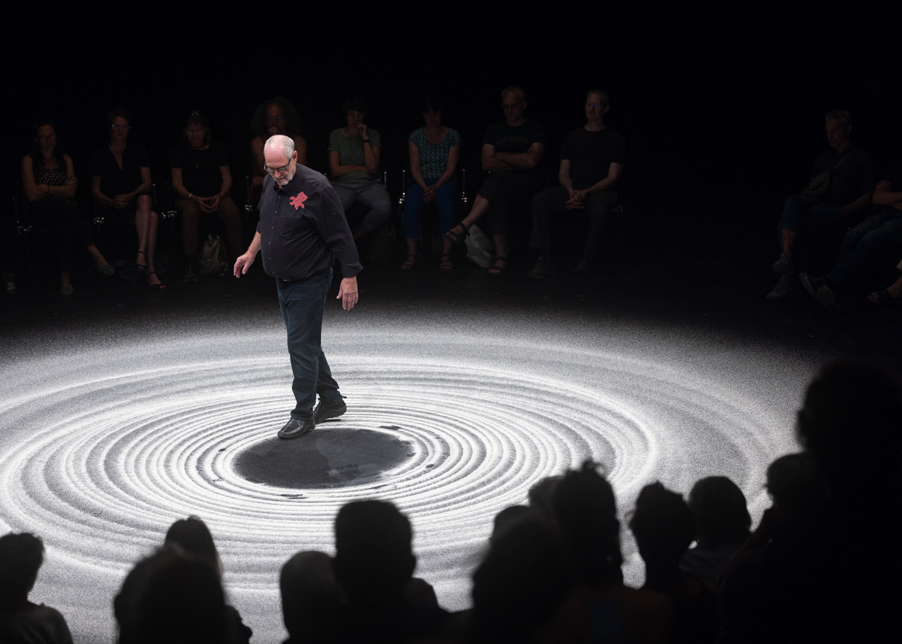

sandscapes
Le temps. Les cercles. Un échange introspectif ironique avec le public.
Un rond noir vide. Un pendule dessine une fine spirale de sable blanc. Le mouvement crée des motifs, ceux‐ci deviennent des images. Les images s'entrelacent, l'une se superpose à l'autre: Disparition et apparition. La ronde; écho de la piste de cirque, où le danger et la vulnérabilité sont réels. Rien ne peut être caché. Tout est là.

Ueli Hirzel
Il y a longtemps, Ueli Hirzel était acrobate de cirque, plus précisément funambule. Puis il a commencé à travailler en coulisses et a créé dans son Château de Monthelon en France un espace de liberté pour les artistes émergents. Avec le soutien de Hirzel, de nombreuses mises en scène novatrices et couronnées de succès ont vu le jour en dehors du courant dominant. Aujourd'hui, Ueli Hirzel ne fait plus de grandes contorsions lorsqu'il monte sur scène. Il prend quelques balais avec lui et nous montre une sorte de quintessence de la vie circassienne. Ou de la vie en elle‐même?
„On pourrait l'appeler sagesse radicale de l'âge. Même si Hirzel semble tout sauf vieux lorsqu'il discute avec lui‐même et avec le public.“
— Ursula Huber

presse
„Ce n'est pas un mandala — mais c'est quand même beau“ : le festival Cirqu' mène aux origines du cirque.
Le cirque a la main mise sur Aarau. Des artistes de classe mondiale investissent les rues, les places et les salles. Parmi eux, Ueli Hirzel est une discrète surprise.
Le pendule dessine un cercle dans l'autre. Le sable ruisselle du petit sac noir sur le sol, cela prend du temps. Vu d'en haut, un „O“ s'insère dans le suivant, constant et persévérant comme lors du „Om“ collectif avant le cours de yoga.
„Sandscapes“ est le nom de la pièce du circassien Ueli Hirzel, qui ouvre officiellement le festival Cirqu' de cette année. Auparavant, la ville avait déjà accueilli des échantillons circassiens de Johann Le Guillerm, qui présente plusieurs productions dans cette édition. Le directeur du festival Roman Müller: „Au Cirqu', nous voyons de grandes actions, mais le début est petit.“ Ce n'est pas un jugement de valeur, la pièce d'ouverture nous ramène plutôt aux origines du cirque: au cercle — à la piste. Müller n'aurait donc pas pu choisir une pièce d'ouverture plus précise.

Avec la tondeuse à gazon à travers le jardin zen.
Ueli Hirzel a peint un tel manège avec son pendule au milieu de la „Alte Reithalle“. Avec différents balais, il parcourt le sable, laissant derrière lui des traces presque comme dans un jardin zen bouddhiste. Pas de cascades artistiques, pas d'acrobaties à couper le souffle. Calme et concentration: ce qui vaut pour les circassiens, le public l'apprend aujourd'hui.
Les motifs que Hirzel esquisse dans le sable à l'aide d'un frottoir et d'une serpillière sont de plus en plus sauvages. Les tourbillons se transforment en lignes qui s'enroulent en volutes exubérantes. „Ce n'est pas un mandala, mais c'est quand même beau“, commente Hirzel. Où cela mène‐t‐il ? „Nous verrons bien, c'est une première“, poursuit‐il. Le hasard fait bien les choses. Bientôt, il manie deux balais en même temps ‐ l'un à gauche, l'autre à droite ‐ comme s'il labourait le jardin zen avec une tondeuse à gazon.
„Sur la piste, tout est réel.“
Ueli Hirzel est sur les pistes depuis les années 80, il a fait danser des visions de cirque sur des cordes et a trébuché dessus en tant que clown poétique. Il dessine le cercle pour la piste avec l'assurance d'un lanceur de couteaux qui, pour la 500e fois, vise avec sa lame juste à côté de la carotide de sa femme. Son objectif initial était la scène de théâtre, il a découvert le cirque parce que „rien n'est « comme si », mais tout est réel“.
Il est tout simplement agréable de voir Hirzel tourner en rond, de suivre le fil de ses pensées. Il cite des philosophes célèbres comme Marcel Proust ( „A la recherche du temps perdu“ ) et Mick Jagger ( „Time Is On My Side“ ) et tisse entre eux des pensées issues de ses 45 ans de carrière théâtrale. Oui, il s'agit peut‐être d'un petit prélude silencieux au festival du cirque, mais il permet de voir en profondeur l'âme du cirque.
conditions
— Performance en solo, 50 minutes.
— Surface de jeu: 8 mètres de diamètre, revêtement fin, sombre et lisse ( p. ex. tapis de danse, mais non contraignant ).
— Lieu de jeu: au moins 5 mètres de hauteur de salle. Préférence pour le public en rond ou en bi‐frontale. Comme la plupart du jeu se passe au sol il est préférable pour la visibilité que le public soit assis légèrement en hauteur. Toute rangée de sièges supplémentaire éventuelle doit être plus haute que celle qui la précède.
— Point de suspension: entre 4.50 et 5.50 mètres. Hauteur haubanée pour un pendule de 10kg.
— Lumière: un cercle de 8 mètres — à définir selon le lieu de jeu.
— Pas de son.
— Nombre de spectateurs: selon le lieu de jeu.
— Montage 1 service hors lumières.
— Arrivage la veille de la première représentation.